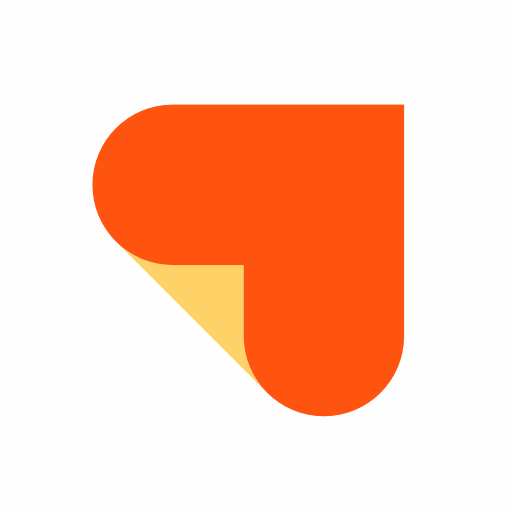

Dual-Track Vertical Timeline
중앙의 구매 여정 스파인을 따라 내려가며, 미국 사용자의 Control & Transparency와 대만 사용자의 Value & Risk Management가 같은 단계에서 어떻게 다르게 작동하는지 한 화면에서 읽을 수 있도록 구성했습니다.
Synthesis
두 사용자 모두 가격을 아주 초기에 스쳐 보기는 하지만, 실제로는 후보 병원과 시술이 어느 정도 좁혀진 뒤 가격을 더 적극적으로 사용한다. 차이는 그 가격을 읽는 방식에 있다.
미국 사용자는 한국 방문 가능성이 생기고 어느 정도 병원 티어와 시술 후보가 잡힌 뒤 가격을 본격적으로 비교한다. 이때 가격은 최저가를 찾는 숫자가 아니라, 총액이 얼마인지, 외국인에게도 같은 가격인지, 예약 단계에서 유지되는지를 확인하는 도구가 된다.
| 초기 역할 | 한국행 메리트 확인, 예산 감, 병원 티어 설정 |
|---|---|
| 본격 활용 시점 | 방문 가능성이 생기고 병원/시술 후보가 잡힌 뒤 |
| 마지막 활용 | 예약 직전 총액, 외국인 동일가 여부, 확정가에 가까운지 재확인 |
"가격을 확인하던 시점은 제가 한국에 가게 된다는 걸 알고 나서부터였어요."
VOC 미국 4.md"처음 관심을 갖기 시작하는 단계에서요. 그 시술이 제 예산 안에 들어오는지 보기 위해 비용이 얼마나 되는지 알고 싶어요."
VOC 미국 7.md대만 사용자는 관심 초기에 시장가를 보며 감을 잡기도 하지만, 공통적으로는 상담 직전과 예약 직전에 가격, 후기, 세부 조건을 다시 맞춘다. 특히 시술은 비교 가능한 가격표로 보지만, 수술은 공개가를 참고용으로만 보고 실제 견적 변수를 따로 계산한다.
| 초기 역할 | 한국행 메리트 확인, 여행 포함 총예산 감, 후보 병원 압축 |
|---|---|
| 본격 활용 시점 | 후보 병원이 어느 정도 좁혀진 뒤, 상담 직전과 예약 직전 |
| 마지막 활용 | 같은 조건 총비용인지, 외국인 조건과 추가 비용이 없는지 재확인 |
"저는 수술에 처음 관심이 생겼을 때부터 바비톡 정보를 찾아보기 시작했습니다."
VOC 대만 10.md"일부는 관심 직후 가격 감과 예산부터 잡고, 일부는 병원/시술 후보를 정한 뒤 가격을 봅니다."
대만 ver3Source: `미국 ver2`, `대만 ver3`
Synthesis
인터뷰 스크립트에는 가격 정보를 몇 점 정도로 신뢰하는지, 그리고 사전에 본 가격과 실제 가격이 다를 때 어느 정도까지는 지불할 의사가 있는지가 직접적으로 드러난다. 이를 평균과 조건으로 정리하면, 사용자가 어떤 가격을 믿고 어떤 가격에서 이탈하는지가 더 선명하게 보인다.
미국 인터뷰에서 확인된 신뢰 점수는 평균 3.5점이었다. 앱가와 실제가가 달랐던 경험이나 외국인에게 더 높은 가격이 붙을 수 있다는 우려가 있으면 점수는 내려간다. 반대로 실제로 같은 가격을 냈던 경험과 현지인 추천이 있으면 점수는 올라간다.
| 신뢰가 올라가는 상황 | 직접 가서도 동일 가격, 현지 추천, 후기와 가격이 일치, 총액이 명확할 때 |
|---|---|
| 정보 활용 방식 | 총액 감을 잡는 출발점으로 활용한 뒤, 채팅 재확인과 후기 대조로 실제 유효성 검증 |
| 추가 지불 의사 | 더 좋은 의사, 더 적합한 시술 제안, 압박 없는 상담이면 +10% 안팎까지 수용 가능 |
| 지불 의사 없음 | 외국인 가격 차이, 숨은 비용, 같은 시술인데 설명 없이 더 비싸진 경우, 강한 압박 |
"그래서 3점으로 평가했습니다."
VOC 미국 7.md"제가 직접 가서 가격을 비교해 봤을 때 실제로 같은 가격이었기 때문에 신뢰할 만하다고 느껴요."
VOC 미국 8.md대만 인터뷰에서 확인된 신뢰 점수는 평균 4.0점이었다. 공식 공개가, 상담 후 동일 가격 유지, 외국인 추가 요금이 없었던 경험은 점수를 크게 올린다. 반면 수술처럼 앱의 참고 가격보다 실제 견적이 크게 높아진 경험이 있으면 신뢰도는 즉시 내려간다.
| 신뢰가 올라가는 상황 | 공식가 공개, 상담 후 동일 가격 유지, 실후기와 공식 정보 일치, 외국인 추가 요금이 없을 때 |
|---|---|
| 정보 활용 방식 | 시술은 같은 조건 비교용, 수술은 참고가로 활용한 뒤 상담 단계에서 맞춤 견적 변수 재확인 |
| 추가 지불 의사 | 원장 지정, 더 전문적인 의사, 프로모션 종료, 세금·일회용품 같은 설명 가능한 비용이면 +10%, 일부는 +20% |
| 지불 의사 없음 | 외국인 프리미엄, 숨은 비용, 과한 업셀, 조건 불일치, 앱 참고가보다 과도하게 높은 실제 견적 |
"가격을 인터넷에 직접 공개하고 투명하게 보여준다는 건 그만큼 더 신뢰할 만하다고 생각했어요."
VOC 대만 6.md"실제 견적은 앱에 있는 대부분의 참고 가격보다 약 1.5배 정도 높았습니다."
VOC 대만 10.mdSource: `미국/7.md`, `미국/8.md`, `대만/5.md`, `대만/6.md`, `대만/9.md`, `대만/10.md`, `대만/11.md`
Synthesis
미국은 숨은 비용이 없는지, 외국인 차별이 없는지, 고객 통제권이 유지되는지를 끝까지 본다. 반면 대만은 같은 조건의 가격인지, 시술과 수술을 같은 방식으로 보면 안 되는지, 외국인 리스크까지 감당 가능한지를 더 강하게 본다.
미국에서 결제를 닫는 마지막 이유는 이 가격이 투명한가, 내가 통제권을 갖고 있는가, 외국인에게도 동일하게 적용되는가에 가깝다. 약간 더 비싸더라도 총액이 명확하고 압박이 없으면 수용 가능하지만, 숨은 비용이나 외국인 가격 차이가 느껴지면 곧바로 신뢰가 무너진다.
"고객 서비스 상황에서는 고객으로서 어떤 일이든 압박을 받아서는 안 된다고 생각해요."
VOC 미국 4.md"가장 어려운 점은 결국 내가 얼마를 내게 될지 명확한 가격을 알려주지 못한다는 점이에요."
VOC 미국 7.md대만에서 결제를 닫는 마지막 이유는 같은 조건의 가격인지, 설명 가능한 맞춤성인지, 수술과 시술의 리스크까지 감당 가능한지에 가깝다. 공개가가 있어도 조건이 다르면 같은 가격으로 보지 않고, 외국인 리스크나 사후 대응 불안이 남으면 결제 직전까지 흔들린다.
"결국 병원을 선택하는 이유는 결과의 미적 완성도예요."
VOC 대만 3.md"외국인이라는 이유만으로 실제로는 그중 한두 가지 수술만 하는데도 200만 원이 넘는 비용을 내야 했습니다."
VOC 대만 10.mdSource: `미국 ver2`, `대만 ver3`
Culture
보고서와 인터뷰를 보면, 가격을 해석하는 방식 뒤에는 각 나라에서 익숙한 예약 문화, 상담 기대치, 서비스 절차의 차이가 깔려 있다.
미국 사용자는 전화 예약과 추천 기반 탐색에 익숙하지만, 한국에서는 오히려 디지털 우선과 사전 공개된 정보를 더 선호한다. 압박 없이 메시지로 확인하고, 예약 전에 어느 정도 확정가에 가까운 정보를 얻는 경험이 중요하다.
| 익숙한 흐름 | 전화 예약, 지인 추천, 상담 중심 접근 |
|---|---|
| 한국에서 선호한 점 | 디지털 우선, 빠른 예약, 메시지 중심 확인, 투명한 과정 |
"저는 확실히 디지털 우선이고 투명한 방식을 더 선호해요."
VOC 미국 4.md"한국은 메시지를 보내서 예약 가능한지 물어보면, 대부분 당일 아니면 다음 날 가능하거든요."
VOC 미국 8.md대만 사용자는 LINE 상담, 선결제, 현장 상담 같은 흐름에 익숙하지만, 한국에서는 가격 공개 방식을 더 투명하다고 보면서도, 동시에 중국어 채널 부족, 번역된 시술명 혼선, 셀프 서비스 느낌 때문에 실제 비교와 이용 경험이 더 어렵다고 느끼기도 한다.
| 익숙한 흐름 | LINE 상담, 예약금/선결제, 현장 상담 후 확정 |
|---|---|
| 한국에서 낯선 점 | 용어 혼선, 중국어 채널 부족, 통역의 한계, 준비 과정의 셀프 서비스 |
"어떤 병원은 아예 중국어 소통 채널이 없어서 편하게 문의할 수가 없어요."
VOC 대만 6.md"이 수술이 정확히 어떤 수술인지 잘 모르겠는 경우가 많았어요. 대만에서 보던 용어와 바로 연결해서 이해할 수도 없었어요."
VOC 대만 10.mdSource: `미국 ver2`, `대만 ver3`, `인터뷰 스크립트`